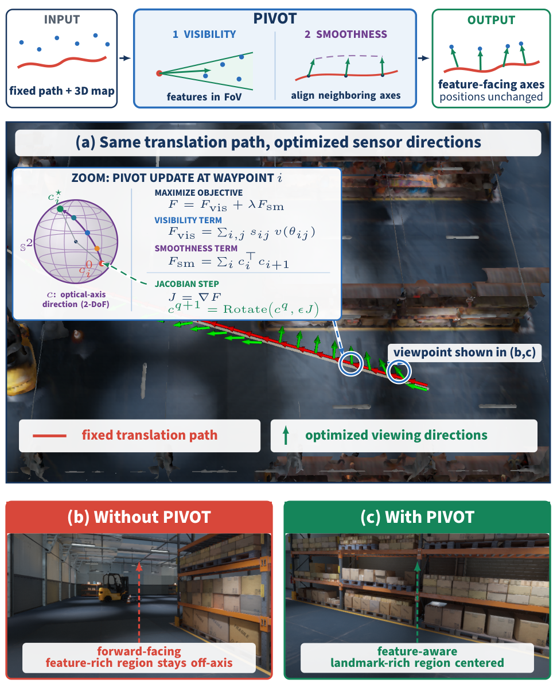
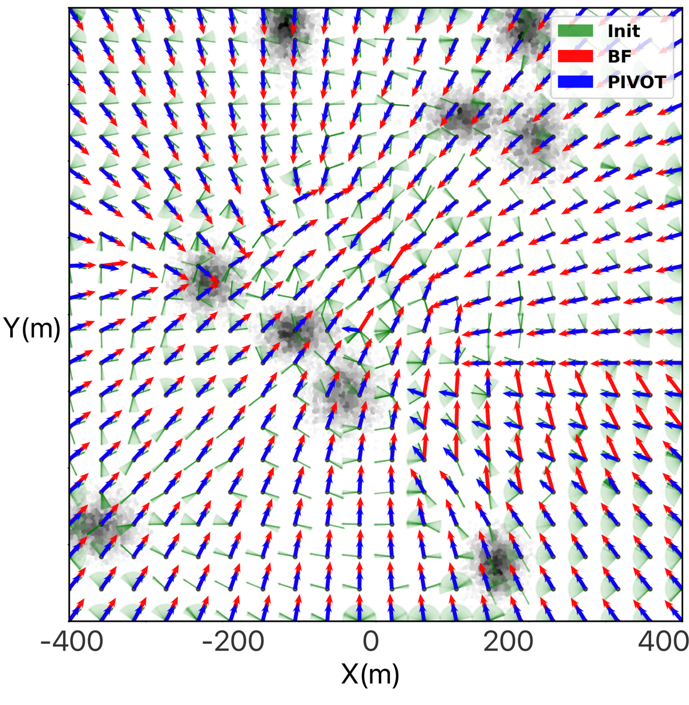
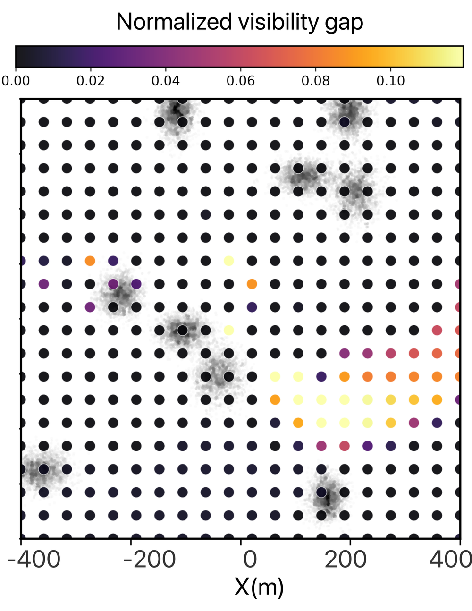
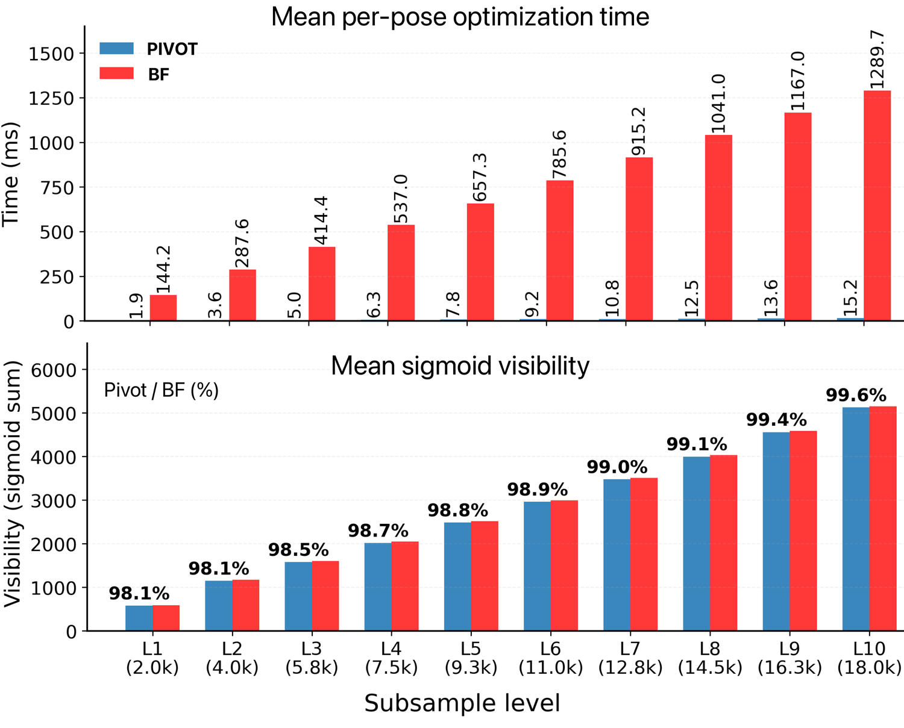
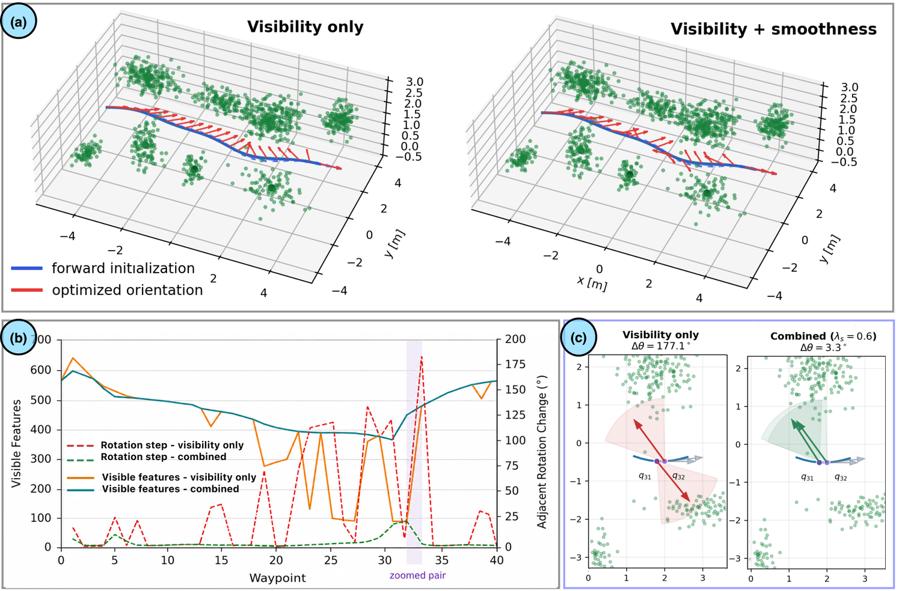
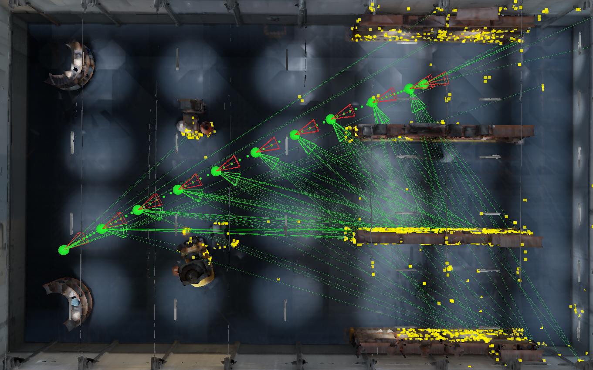
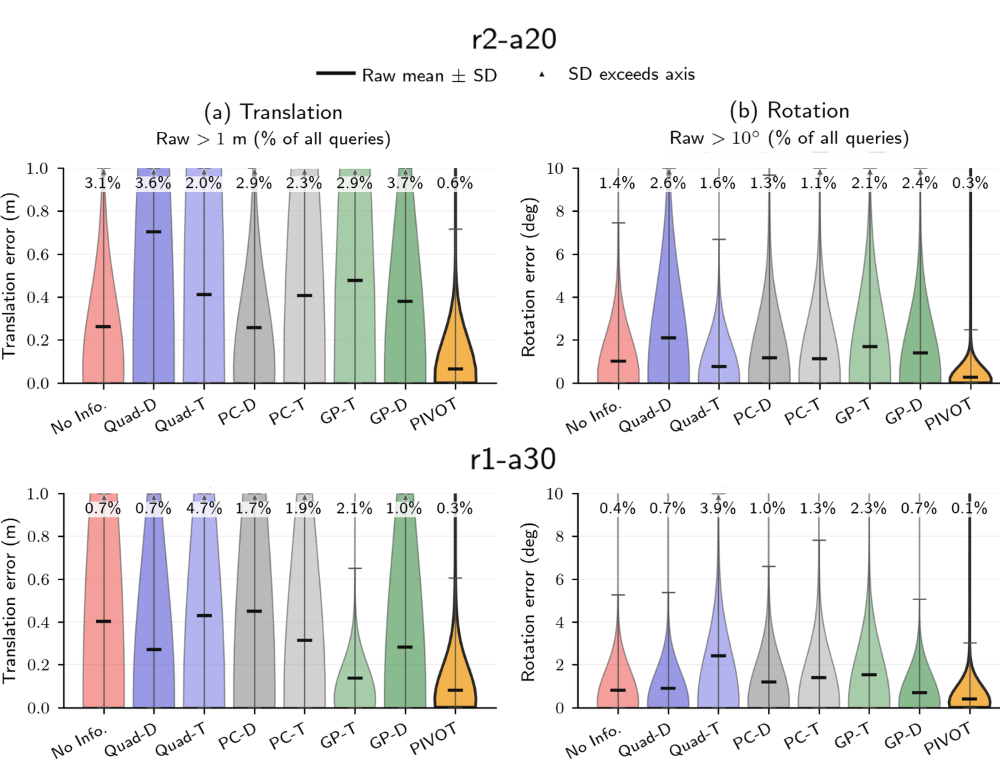
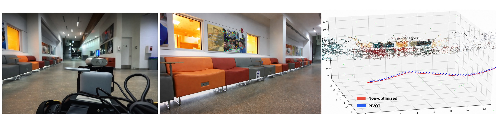
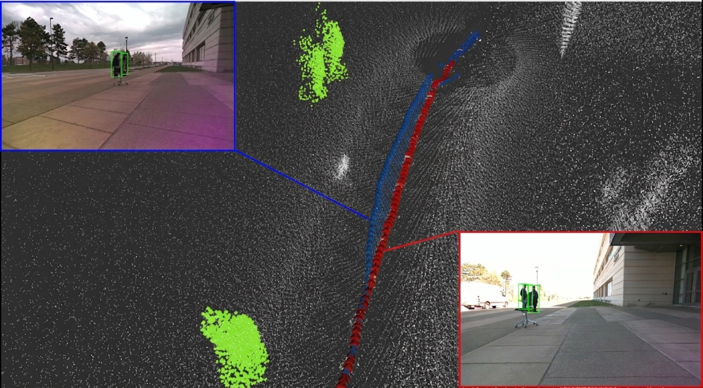

Preprint · Submitted to IEEE Robotics and Automation Letters (RA-L)
Robotic perception is often planned under the assumption that the sensor field of view is fixed relative to the robot body. Motion-decoupled sensors, such as gimbal-mounted cameras and steerable depth sensors, break this coupling: the robot can keep following its assigned path while the sensing direction changes independently.
PIVOT is a lightweight online method for this setting. Given a fixed translation trajectory and a 3D map of task-relevant landmarks, PIVOT optimizes the sensor viewing direction to maximize feature visibility. Under a conical FoV model, visibility depends only on the optical axis, yielding a two-degree-of-freedom problem on the viewing sphere S2.
PIVOT uses a smooth visibility objective and coordinate-free SO(3) exponential-map updates, avoiding explicit yaw/pitch parameterizations and exhaustive viewing-sphere search. A trajectory-level smoothness term additionally discourages abrupt changes between neighboring viewing directions and promotes temporal view overlap.

At each waypoint, PIVOT scores landmarks using a differentiable approximation of whether they fall inside the camera FoV. The visibility gradient rotates the optical axis toward feature-rich structure. At trajectory level, neighboring axes are encouraged to align so sensor motion remains smooth.
The robot translation path remains fixed; PIVOT only changes sensor orientation.
Formulates active sensor pointing as an online optimization problem on S2, separate from robot translation planning.
Derives a smooth feature-visibility objective and applies SO(3) exponential-map updates without explicit angular parameterization or exhaustive candidate-view search.
Extends the single-pose optimizer with a smoothness objective for continuous sensor pointing and temporal view overlap.
Evaluates visibility, computation, downstream localization, and physical viewpoint control in photorealistic simulation and on Boston Dynamics Spot.
Monte Carlo evaluation uses nine truncated Gaussian feature clusters, 400 camera poses, ten nested map densities from approximately 2k to 18k features, a 30° full FoV, and a 2° brute-force viewing-sphere reference.



Brute-force evaluation takes 144.2-1289.7 ms per pose over the same feature-count range.

Visibility-only optimization can switch abruptly between competing feature clusters. Adding the smoothness term largely preserves visibility while suppressing these discontinuities; at the highlighted waypoint pair, the adjacent-view change drops from 177.1° to 3.3°.

Example fixed translation path with original and optimized camera viewing directions.

| Map | PIVOT registration failure | Next-best evaluated baseline | PIVOT total computation |
|---|---|---|---|
| r1-a30 | 29.6% | 41.0% | 0.045 s |
| r2-a20 | 2.4% | 4.4% | 0.061 s |
The evaluation compares against the six perception-aware baselines from Fisher Information Field: PC-D, PC-T, GP-D, GP-T, Quad-D, and Quad-T, plus a no-information baseline. Across the two maps, the paper reports the lowest mean translation and rotation errors for PIVOT together with the lowest registration-failure rates, while total computation is 0.045 s and 0.061 s respectively.
PIVOT is deployed on a Boston Dynamics Spot quadruped equipped with a ROS-based pan-tilt gimbal, Intel RealSense D455 camera, and Velodyne VLP-16 LiDAR with FAST-LIO localization.

Indoor localization experiment: Spot follows the same nominal S-shaped Autowalk route with a fixed forward-facing camera and with the gimbal tracking the PIVOT viewpoint trajectory.

The outdoor demonstration uses standing people as task-relevant regions of interest. These target regions are supplied to PIVOT as 3D features, and the resulting viewing-direction trajectory is physically tracked while Spot moves through the environment.
Core optimizer, trajectory optimization, simulation/evaluation scripts, and robot-side integration.
github.com/droneslab/PIVOTThe modified Fisher Information Field code used for the baseline experiments is kept in a separate fork to preserve upstream lineage.
FIF baseline fork@misc{chen2026pivot,
title = {PIVOT: Perception-aware Independent Viewpoint Online Optimization},
author = {Yuyang Chen and Shekoufeh Sadeghi and Charuvahan Adhivarahan and Elton Lemos and Chen Wang and Sanjeev J. Koppal and Karthik Dantu},
year = {2026},
eprint = {2609.19510},
archivePrefix = {arXiv},
primaryClass = {cs.RO}
}